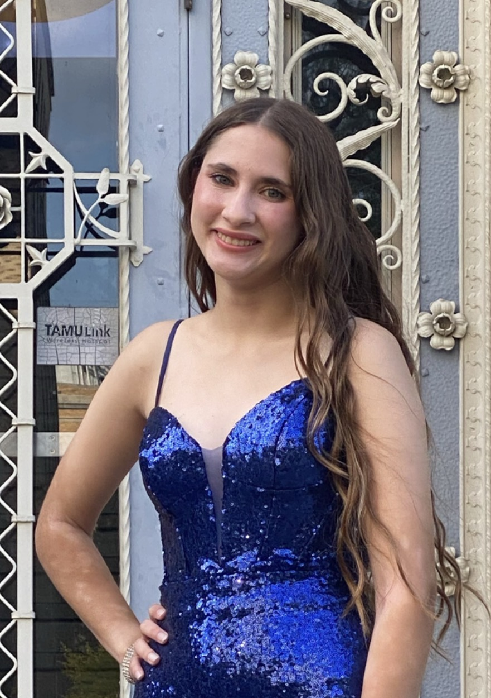

MIS & AI Ethics
About Us
Claire Ngo, Kristen Nowlin, Seth Crump, Julie Alford, Vedant Jadhav
October 26, 2026
Home | AI Usage | Security | About Us
Seth Crump
This assignment has shown me how to work on a large scale project with
a decently large team. Since I want to go into the computer programming
industry one day, this gives me a good idea of how a team-based project might
look. I was also able to sharpen my skills by using GitHub, since this was
the easisest way to get all of our code together in one place while working on
separate devices. Other than that, this project opened my eyes to a lot more information
in terms of AI usage and cybersecurity as a whole. Finally, I am very grateful for my team,
and they did great on each of their assigned parts of the project!
Claire Ngo
In this assignment I learned how to work on a project and collaborate in a group. I also
learned how to use GitHub to share our code and work together more efficiently. I gained
a better understanding of what MIS is and how it functions within an organization.
Additionally, I learned about the appropriate and inappropriate uses of artificial intelligence
and the importance of cybersecurity in protecting businesses and their information. This project
helped me understand how technology can be used to solve problems and improve business operations.
Overall, I appreciate my team's efforts and learned a lot through working on this project.
Kristen Nowlin
In this assignment, I have learned about MIS, AI, and Security. For MIS, I have learned that there
are many different factors of MIS such as Input, Processing, Output, and Users. From AI, I have
learned that there are many specific requirements when dealing with the ethical uses of AI tools in
learning. This is especially true when using AI in assignments and how important it is to read the
syllabus before implementing AI generated work into any assignments. When learning more about Security,
I have learned how important it is to secure your systems and to know how to avoid potential hacking
threats. Additionally, I have learned more about the history of internet security and the Morris Worm
incident which sparked the need for having professionals in the cybersecurity field.

Julie Alford
This HTML project has shown me how to use GitHub in order to seamlessly collaborate with a team.
This project been an insightful introduction to the world of coding. I have learned about syntax, pulling/pushing code,
as well as working on a project as a team. This project has certainly been very informative. I hope to become a Data
Scientist one day and knowing how to code is one of the main pillars of that career. Lastly, I am very appreciative of
my teammates who helped breakdown both GitHub and HTML into ideas I could fully grasp.
Vedant Jadhav
This assignment has taught me how to use html programming in a useful way to create a functional website to display
information. Working together with this team really helped with the process because everyone was very helpful and did
wonderful work on this project. As an engineer, knowing HTML helps me get my foot in the door for future coding and
programming languages. Python and other programming languages use the same applications and style of writing programming,
so it makes it easier to learn once I know html. Additionally, I was able to collaborate on this project with my team
using Github for the first time, this has allowed me to learn an important resource which will help boost my academic career.
I am very grateful to have been able to work with this team and to work on this website which has educated me on AI usage and cybersecurity.
|